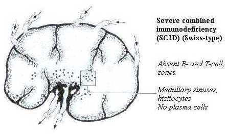
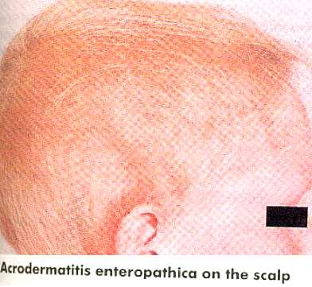

PRIMARY IMMUNODEFICIENCIES WITH MINGLED MANIFESTATIONS
The realization of any full-scale immune response resulting in production of large quantities of IgG requires obligatory cooperation of T-helpers with B-cells for the induction of secondary antigen-dependent differentiation of the later ones. Hence, the severe glitch of T-cell function will alter both humoral and cellular links of immunity. Traditionally, the subgroup of combined immunodeficits includes the disorders with noticeable derangement of both immunoglobulin and cellular immunity.
SEVERE COMBINED IMMUNODEFICIENCY DISEASE (SCID). This is an extremely serious form of inherited immunodeficiency syndrome characterized by defects in both T cell-mediated and humoral immunity, most severe among the whole group of primary immunodeficits. Without appropriate treatment average survival term almost never exceeds 2 years.
 It is presumed, that underlying defects alter the differentiation of lymphoid
progenitors from hematopoetic stem cells, but this disorder is heterogeneous with respect
to both patterns of inheritance and immune response derangements. Although all patients
show impairment of both T-and B-cell functions, in general there is greater loss of T-cell
functions.
It is presumed, that underlying defects alter the differentiation of lymphoid
progenitors from hematopoetic stem cells, but this disorder is heterogeneous with respect
to both patterns of inheritance and immune response derangements. Although all patients
show impairment of both T-and B-cell functions, in general there is greater loss of T-cell
functions.

Thymus in SCID is located on the neck and devoid of lymphocytes and Hassall’s bodies – hence it does not represent a lymphoid organ. Most patients are severely lymphopenic and lack mature T lymphocytes in the blood. Even if bone marrow cells from some SCID patients are incubated with normal thymus epithelial cells or thymic hormones, they fail to differentiate normally, suggesting a defect in the stem cells themselves. However, other patients have shown improvement in T-cell functions after transplantation of thymus, which suggests that the defect may lie in the ability of the thymus to provide signals for differentiation of stem cells.Recent studies reveal another level of heterogeneity: in some patients, virtually all of the circulating lymphocytes have the phenotypic and functional characteristics of NK cells.
All in all, SCID in most cases results from defects of lymphoid stem cells involving both T-cell and B-cell precursors. As might be expected, lymph nodes, spleen, tonsils, and appendix show virtual absence of any lymphoid tissue, but the pathognomic histologic finding is in the thymus gland, which fails to descend from the neck into the anterior mediastinum and is devoid of lymphoid cells or Hassall's corpuscles. The blood vessels are very small, indicating that the thymus is fetal rather than involuted. The gland seems to be arrested at the stage at which it resembles the thymus of a six-to eight-week-old fetus.
Infants are incapable of any of the immunologic functions - they do not produce antibodies, exhibit very small amounts of IgG and no IgM in the serum, and fail to reject skin allografts or to develop delayed hypersensitivity reactions. They succumb during the first year of life, usually to such opportunistic organisms as Pseudomonas, Candida, or Pnneumocytis carinii, or infections with viruses such as Cytomegalovirus and Varicella, or Herpes simplex viruses. Some patients develop graft-versus-host disease mediated by transplacental transfer of maternal T lymphocytes. Because SCID is usually caused by defects in stem cells, grafting of normal bone marrow stem cells is the treatment of choice. In many patients, full immunologic reconstitution can be achieved by transplantation of sibling bone marrow. The donor marrow has to be depleted of mature T cells to prevent fatal graft-versus-host disease. However, NK cells that are present in some of these patients can recognize transplanted allogeneic marrow stem cells, thereby preventing successful engraftment.
It seems, judging upon many signs of its versatile nature, mentioned above, there are various mechanisms of impaired T-cell immunity in SCID.
Several modes of transmission are recognized: with two different autosomal recessive mutations (over 40% of cases) and two X-linked recessive mutations involved (50-60% of cases).
ADA-DEFICIENT SCID. Many patients with the autosomal recessive form of SCID lack the enzyme adenosine deaminase (ADA) in their cells. The implications of this enzyme deficiency in the pathogenesis of the immunologic abnormalities resemble that of PNP deficit, discussed above. The lack of ADA-gene in 20th chromosome causes the cumulating of ADA substrate – deoxy-ATP, which decay is blocked. The excess of deoxy-ATP halts the DNA biosynthesis within the lymphoid cells. ADA presents also in red blood cells (50-fold less concentration, than in T-cells and 10-fold less amount, than in B-cells). So, the clinical picture of ADA-deficit includes also hemolytic anemia. Some of the ADA-deficient individuals display thoracic chondrodysplasia. Thymus in this kind of SCID may contain few T-cells of early stages and even Hassall’s bodies, so its lymphoid colonization is supposed to be started, but aborted. Treatment of this variant of SCID has been attempted by infusion of normal ADA-containing erythrocytes. This has resulted in immunologic improvement in some, but not all, patients.
More exciting, however, is the prospect of gene therapy because the gene for human ADA has been cloned and successfully introduced and expressed in primate cells in culture. Thus, it would seem that the insertion of the ADA gene into the patient's own marrow stem cells, followed by reinfusion of the transfected marrow, may often the possibility of cure without the attendant problems of graft-versus-host disease. This is currently an area of intense investigation.
X-LINKED SCID. SCID is predominantly a disease of boys. In most common form of X-linked recessive SCID there is a mutation of g - chain, shared by the receptors of several cytokines: IL-2, IL-4, IL-7, IL-11 and IL-15. The resulting manifestation varies from entire failure of all immune mechanisms, to partial maintenance of killer functions or even some antibody production. Most frequently, cytokine-dependent steps of lymphopoesis are gravely deranged.
Another, relatively unusual genocopy of X-linked SCID depends on defect of ZAP-70 protein, which is a thyrosine proteinkinase, responsible for post-receptor transduction of differentiation signals, establishing the maturation of CD8-positive cells and triggering some functions of CD4-positive cells. This is severe disorder with predominantly T-dependent symptoms.
SWISS-TYPE SCID. This is another autosomic recessive genocopy of SCID, observed less often than alternative SCID varieties. Unlike patients with purine metabolic disorder, “Swiss” SCID patients do not display chest malformations, but have total absence of lymphoid elements within thymus. The molecular nature of existing defect is poorly defined, but in some of this SCID victims there is a failure in class II MHC molecule expression, which impairs the ability of T-helpers for antigen recognition. Both cellular immunity and T-dependent antibody production are deficient.
BARE LYMPHOCYTE SYNDROME. This disorder is very close to above mentioned variant of SCID and sometimes included in SCID group. Autosomic recessive defect in 6th chromosome involves promoter gene of MHC assembly. MHC glycoproteins of classes I and II (sometimes – only class II) are absent. Positive selection of CD4+ cells is deranged, Ig biosynthesis fails without T-helper aid. The clinical specifics of this syndrome are the absence of lymphopenia and prevailing of gut bacterial, viral, and fungal infections. The lymphoid organs are hypoplastic. The syndrome is ethnically selective for the persons of Mediterranean descent.
RETICULAR DYSGENESIS. This is rare severe combined immunodeficiency of autosomic recessive character, described by O.M. Vaal and V. Seynhaeve (1959). It is accompanied by agranulocytosis, thus representing the inherited disorder of both lymphopoesis and myelopoesis. Phagocytosis is failed. However, there is no RBC or pletelet deficiency. Sometimes it is also joined to SCID group.
IMMUNODEFICIENCY ASSOCIATED WITH LACK OF LEUKOCYTE ADHESINS. A large number of membrane-associated proteins have been found to be essential for leukocyte and lymphocyte functions that involve cell-to-cell interactions, such as phagocytosis, diapedesis, margination, rolling, pavementing, homing, interactions between T and B cells, and T-cell activation. Many of these functions involve HLA molecules (already discussed) as well as a family of glycoproteins collectively referred to as leukocyte adhesion proteins (adhesins). Immunodeficiency syndromes associated with a lack of these cell surface proteins are worthy of brief consideration. In fact, one of such disorders is above mentioned bare lymphocyte syndrome. Another one develops as a result of b 2- integrins’ defect. The lack of the gene, encoding their common subunit causes the deficit of leukocyte diapedesis and margination, hence the defensive mechanisms of inflammation are weakened. The function of integrins as co-receptor molecules in immune cooperation is also altered. There is disorder of phagocytes transportation into the foci of inflammation, resulting in prolonged course of ibacterial nfections, poor wound healing and combined immunodeficiency.
Many other inborn disorders are characterized by combined failure of cellular and immunoglobulin-mediated immune mechanisms, although traditionally they are reviewed separately from SCID, as their severity is not so great.
WISKOTT-ALDRICH SYNDROME. It is combined disorder of immunity and platelet functions. The patients suffer from thrombocytopenia, disorder of platelet release reaction, poor platelet plug formation. There is also eosinophilia. The platelets and lymphocytes have the deficiency of surface syaloglycoproteins due to recessive X-linked genetic defect. Immunologically, there is deficit of IgM and excess of both IgA and IgE, which is account for eczema. T-cell functions are weakened, the Ig-response for polysaccharide antigens is diminished. Platelet deficiency may be related to autoallergic mechanisms or lack of response for IL-11, because bone marrow does not produce enough of megacaryocytes. The main complications are systemic herpetic infection, hemorrhagic syndrome and hemoblastoses: 10% of patients develop some lymphoid neoplasms.
LOUIS BAR’S SYNDROME. This is combination of mixed immunodeficiency, neurological manifestations (with leading symptoms of cerebellar ataxia) and teleangiectasia.
The trait is autosomal recessive and primary defect is located in 11th chromosome. The syndrome is commonly revealed in children after age of 3 years, as astasia and abasia. There may be dysarthria and hypertonus, intentional tremor and other symptoms of cerebellar ataxia and extrapyramidal disorder. Later develop teleangiectases, involving skin and eye bulb conjunctiva. Less common symptoms are scleroderma and follicular keratosis with senile appearance of the skin and coffee-milk spots. There may be gonadal dysgenesis and liver involvement.
Immunologically, IgE and IgA are deficient, IgM is exclusively monomeric. Sometimes the amount of IgG is decreased. There is complete anergia in delayed hypersensitivity tests. Thymus is absent or hypoplastic, peripheral lymphoid organs get atrophy, moderate lymphopenia can be revealed in blood. The patients suffer from chronic and repeated sinupulmonary infections.
The mechanism of disease is related to the absence of some component of reparase system in cell nuclei. As a result, somatic mutations are poorly corrected and cumulated within cells. Mutant clones in cerebellum vermis and lymphoid organs perish.
Secondary chromosomal aberrations are characteristic for 7th and 14th chromosomes of lymphoid cells. As a result, there is a high risk of malignancies, especially lymphoid ones, and great production of oncofetoproteins. Another side of the same medal is low radiation resistance, which makes chest X-ray impossible and brings additional hardships in thymus hypoplasia diagnosis.
GOOD’S SYNDROME. This is the combination of thymoma, combined immunodeficiency and hemocytopenia. The thymoma may be malignant or benign, formed by fusiform cells. Hemocytopenia includes eosinopenia and, sometimes, also anemia and leukopenia (of mixed autoimmune and aplastic origin). Immunodeficit is complicated by opportunistic and banal purulent infection. Very often there is also myasthenia gravis, polymyositis or at least cutaneo-muscular candidiasis. It is proposed, that many symptoms of this disorder are autoallergic.
JOB’S SYNDROME. This disorder is named after the hero of Bible history, but not after “a scientist Mr. Job, who has described it”, as student may wish to answer. The core manifestations are atopic dermatitis, multiple cold skin abscesses caused by Staphylococci and candidiasis. The defect is believed to be autosomic dominant with incomplete penetrance. There is no proper response of B-cells for T-cell derived cytokines, or maybe, T-cell production of some cytokines is impaired. Interferon-dependent down-regulation of IgE production is not possible, causing anaphylactic reactions.

ENTEROPATHIC ACRODERMATITIS. The disorder manifests in combined immunodeficit, scaling dermatitis, chronic enteritis, neurological symptoms and aspermatogenesis. The key link of pathogenesis is the failure of zinc absorption from gut. An important hormone of thymus – thymulin – is a Zn-containing peptide, which may explain immune deficiency in this disease.
NEXT CHAPTER
OR